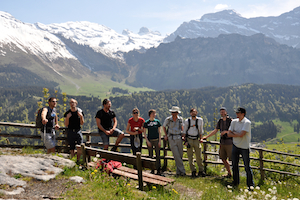
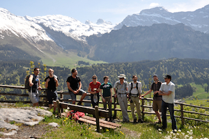

Welcome
Welcome to the Experimental Microbial Ecology Hub (EMEH), the aim of which is to help connect EMEH researchers, to communicate EMEH relevant material, and to perhaps even create some new initiatives. This site will always be a work in progress, so please let us know how it could be improved (or even help out).
 


Contact us
This site is maintained by Owen Petchey. Please get in touch if you'd like to contribute.
owen.petchey@ieu.uzh.ch
(+41) (0)44 635 4770
Institute of Evolutionary Biology and Environmental Studies
University of Zurich